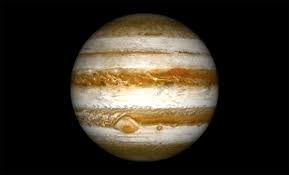

|

JÜPİTER
Jüpiter, Güneş’e en yakın beşinci gezegen olup Güneş Sistemi’nin en büyük gezegenidir. O kadar büyüktür ki içine binin üzerinde Dünya sığabilir.
Jüpiter bir gaz devidir; yani katı bir yüzeye sahip değildir ve büyük ölçüde hidrojen ile helyum gazlarından oluşur. Bu devasa gaz kütlesi, gezegene
kalın ve hareketli bir atmosfer kazandırır. Atmosferinde farklı renklerdeki bulut kuşakları ve fırtınalar sürekli olarak hareket halindedir.
Bu fırtınaların en ünlüsü, “Büyük Kırmızı Leke” olarak bilinen dev kasırgadır. Bu fırtına, Dünya’dan bile büyük olup yüzlerce yıldır devam etmektedir.
Jüpiter’in güçlü bir manyetik alanı vardır. Bu alan, Güneş rüzgarlarını engeller ve çevresinde güçlü radyasyon kuşakları oluşturur. Gezegenin bu manyetik
alanı, Dünya’dakinden yaklaşık 20.000 kat daha güçlüdür. Ayrıca Jüpiter, hızlı dönüşü nedeniyle kutuplardan basık, ekvatordan şişkin bir şekle sahiptir.
Kendi ekseni etrafında dönüşünü yaklaşık 10 saatte tamamlar; bu da Güneş Sistemi’ndeki en kısa gün uzunluğuna sahip gezegenlerden biri olduğu anlamına
gelir.
Jüpiter’in etrafında çok sayıda uydu bulunur. Şu ana kadar 80’den fazla uydu keşfedilmiştir. Bunların en büyük dört tanesi —Io, Europa, Ganymede ve
Callisto— “Galilei uyduları” olarak adlandırılır çünkü 1610 yılında Galileo Galilei tarafından keşfedilmişlerdir. Bu uyduların her biri, kendine özgü
özellikleriyle dikkat çeker. Örneğin, Europa’nın buzla kaplı yüzeyinin altında bir okyanus olduğu düşünülmekte ve bu da yaşam olasılığını gündeme
getirmektedir.
Jüpiter’in halkaları da vardır ancak Satürn’ün halkaları kadar belirgin değildir. Bu halkalar ince ve toz halindedir, genellikle gezegenin uydularından
kopan parçacıklardan oluşur.
Sonuç olarak Jüpiter, hem büyüklüğü hem de dinamik yapısıyla Güneş Sistemi’nin en etkileyici gezegenlerinden biridir. Dev fırtınaları, güçlü manyetik
alanı ve çok sayıda uydusuyla bilim insanlarına evrenin oluşumu ve gezegen sistemlerinin yapısı hakkında önemli ipuçları sunmaktadır.
|